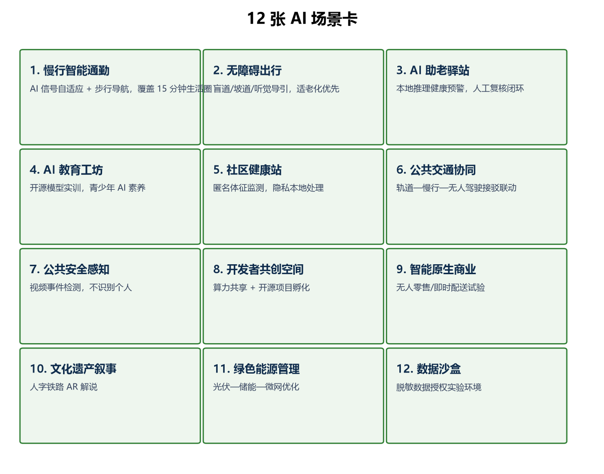
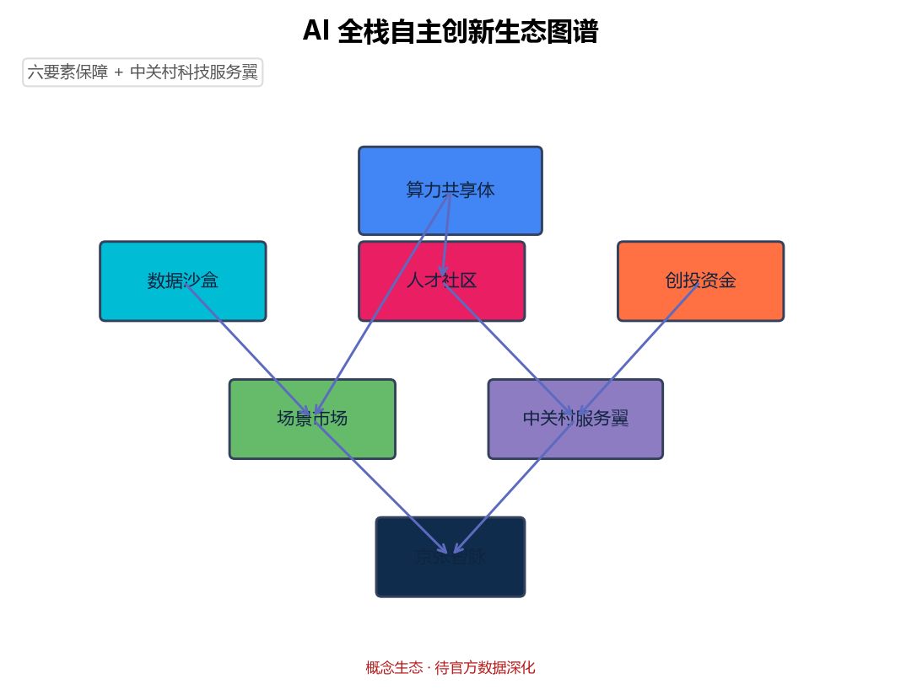
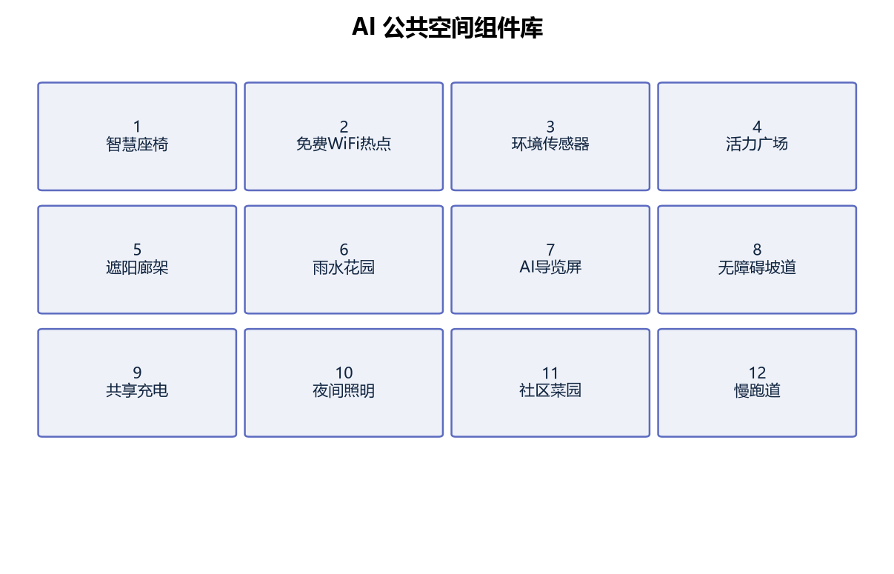
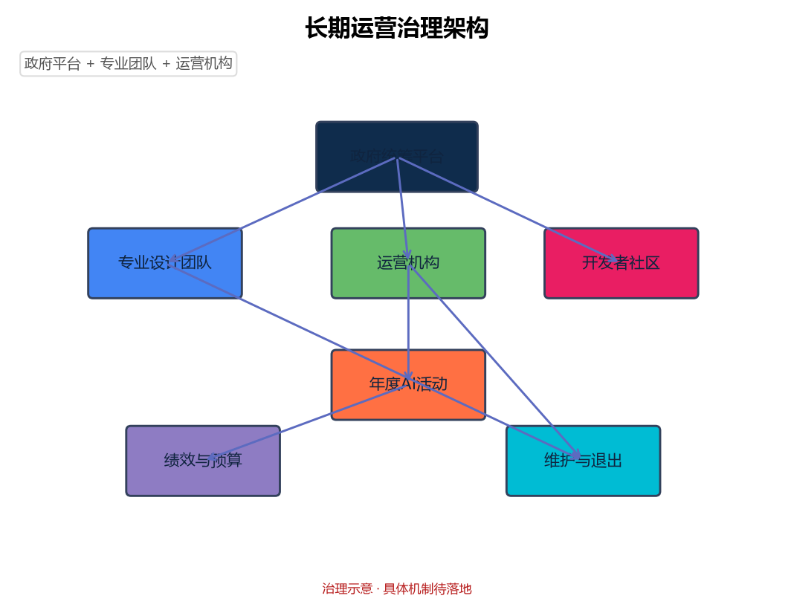
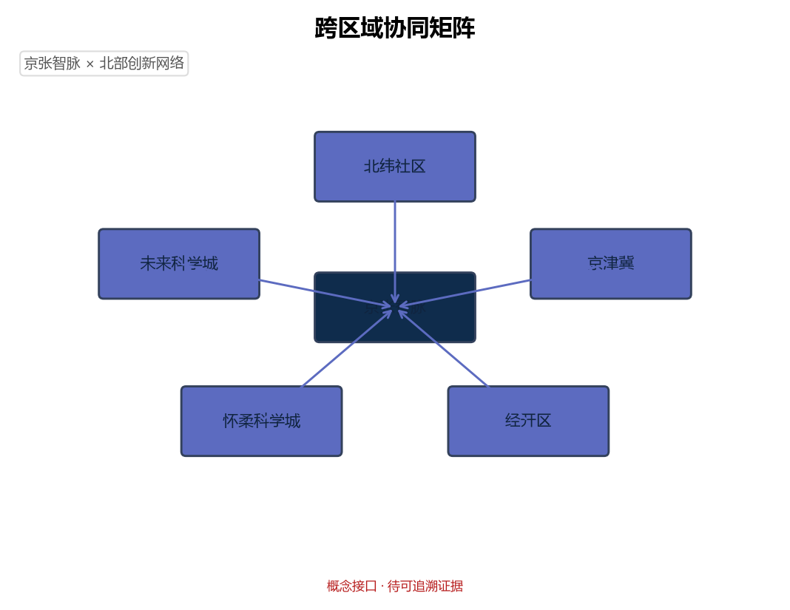

总览地图

一脊(智脉绿廊) · 三区 · 两翼。
三层范围

统筹研究约 43.6 km²；总体设计约 11.4 km²；重点详细约 368.4 ha。
重点区域

众智园 192.1 ha / AI 原点社区 104.3 ha / 大钟寺 72.0 ha。
用地分区
全覆盖概念分区，按 MNR 2023 用地分类。
交通慢行

智脉慢行脊 + 小月河蓝绿 + 轨道接驳。
蓝绿公共空间
绿地率 38.4% / 公共空间率 8.0%。
建筑
建筑规模与拆改留为概念值，待法定控规。
更新项目
近期—中期—长期三期，按纬度带划分。
AI 场景

12 张场景卡 · 6 类用户 · 4 个验证场景。
核心指标
由 geometry 复算（本地度量投影，近似 EPSG:4548）。
任务覆盖
agent.1–agent.6 全覆盖；公示章节 1.3/1.4/1.5。
自检状态
本地四门自检 PASS；临时几何，待官方 polygon 替换。
来源
官方公告 / 清权任务书 / 公开标准 / 临时边界。
假设
所有空间与运营建议均为概念；法定控规条件缺失，列待补。
核心指标
11427387.1000
场地面积 (sqm)
sqm
0.3835
绿地率
ratio
0.0801
公共空间率
ratio
0.1996
道路率
ratio
0.1159
建筑密度
ratio
1.0200
容积率
ratio
由 geometry/land_use.geojson 在本地度量投影下复算；临时边界。
任务覆盖
| 任务 | 内容 | 状态 |
|---|---|---|
| agent.1 | 一带总体概念与功能统筹 | 已覆盖 |
| agent.2 | AI全栈自主创新生态 | 已覆盖 |
| agent.3 | AI+场景赋能 | 已覆盖 |
| agent.4 | AI公共空间与朝圣地标 | 已覆盖 |
| agent.5 | 百年京张—中关村—AI新文化 | 已覆盖 |
| agent.6 | 全球AI创新活动与长期运营 | 已覆盖 |
品牌识别 / Logo
AI 生态图谱

公共空间组件库

长期运营治理

跨区域协同
